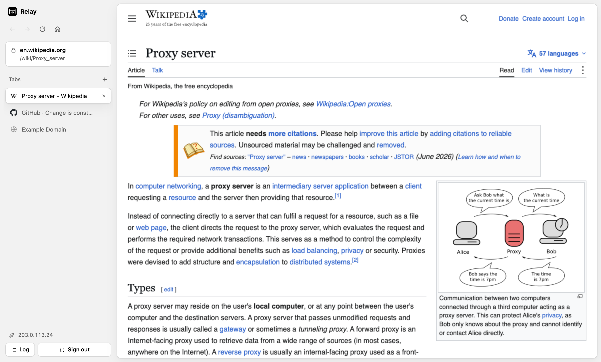

A private web browser that runs on your own server.
relay-browser is an open-source, self-hosted web proxy with a real browser interface. Every page you open loads through your server, so websites only ever see the server's IP address. Pages run in sandboxed tabs, trackers are blocked, and nothing is kept once you close it.

What it's for
- Private browsing from a server's IP. Your own IP address is never sent to the sites you visit.
- Testing from another network or region. Check geo-restricted content, DNS changes, CDN routing and IP allowlists as your server sees them.
- Leaving no trace. No cookies, storage, cache or history stay behind on the device you browse from.
Features
- Tabs, per-tab history and search, in a browser UI that runs in any modern browser
- Each page sandboxed in its own origin, isolated from the UI and other tabs
- Server-side tracker blocking and removal of tracking parameters
- Works with modern JavaScript sites such as YouTube, GitHub and Wikipedia
- Video: range requests for seeking, HLS and DASH manifest rewriting
- Sessions end on sign-out or tab close, with
Clear-Site-Data - Password protected, rate limited, and nothing written to disk
- Node.js, three dependencies, runs on a VPS, shared hosting or Docker
Get started
git clone https://github.com/masghar/relay-browser.git
cd relay-browser
npm install
cp .env.example .env # set APP_PASSWORD
npm startOr with Docker:
docker build -t relay-browser .
docker run -d -p 3000:3000 -e APP_PASSWORD='choose-a-long-password' relay-browserOpen source
relay-browser is MIT licensed. Bug reports, site-compatibility fixes and pull requests are welcome. See the contributing guide.